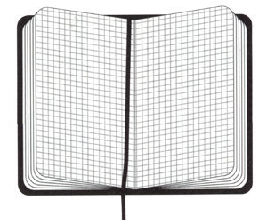

In what concerns the continuous evaluation solving exercises grade during the semester, you should submit until 23:59 of October 25th
(this exercise will still be available for submission after that deadline, but without couting towards your grade)
[to understand the context of this problem, you should read the class #03 exercise sheet]

Sarah has a deep and inexplicable love for her squared notebook. While others binge-watch shows or scroll endlessly through social media, Sarah prefer coloring squares in a grid.One day she decided to start a new hobby: shading squares with her pencil following some very peculiar rules. Starting from a single shaded square on the first line, she applies the following transformations for every square in each new line:
So, the very first line begins with only one shaded square. From there, Sarah applies her rules line by line, creating patterns that look suspiciously like she’s inventing her own cryptographic art style. Below you can see how the first three lines turn out:
Sarah found the resulting patterns so beautiful that she couldn’t resist... counting squares! She picks a segment of one line and counts how many shaded squares it contains.
For example, between positions 3 and 7 of line 3, there are exactly 2 shaded squares:
But soon Sarah realized that counting shaded squares by hand was extremely exhausting, and she’d rather keep her energy for sharpening pencils. That’s where you come in.
Given Sarah's rules (starting with a single shaded square in the first line), your task is to answer several queries of the form:
On line number K, how many squares are shaded between positions A and B (inclusive)?
The first line contains a single integer Q, the number of queries.
Each of the next Q lines contains three integers K A B, representing the interval [A,B] on line K. You may assume all positions are valid for the line in question, that is, they are within its limits.
For each of the Q queries, output a single line with the number of shaded squares between positions A and B on line K.
The following limits are guaranteed in all the test cases that will be given to your program:
| 1 ≤ Q ≤ 1 000 | Number of Queries | |
| 1 ≤ K ≤ 1 000 | Line of the squared notebook | |
| 1 ≤ A ≤ B ≤ 1016 | Poositions on the line for one query |
| Example Input | Example Output |
5 3 3 7 3 1 8 2 1 1 5 27 41 4 9 12 |
2 4 1 5 0 |
Explanation of the example
Below are the segments corresponding to each of the queries: